(I thought it would be interesting to use Sundays to focus on Rensselaer's churches and to see how many Sundays I can go before I run out of material. Indiana is richly endowed with religious denominations, with influences from North and South, East and West. This is part of that series of posts.)
You may be wondering why there is a picture of the Carnegie Center instead of a church building this Sunday. It is because there is a group that meets in the Carnegie Center on Sundays. According to the "Church Services Directory" in the Rensselaer Republican, Hope Community is a "community of Christ's Believers offering hope and healing to the wounded. Sundays 9:30 am: Praise music, message from God's word, small group Bible study, fellowship, love, and acceptance."
I could not find any other information about this group on the web.

This blog reports events and interesting tidbits from Rensselaer, Indiana and the surrounding area.
Sunday, May 31, 2009
Saturday, May 30, 2009
Hail storm
This evening a thunderstorm interrupted what had been a sunny day, bringing with it a downpour and hail. After the rain had stopped and the sun had returned, this is what part of Weston Cemetery looked like.
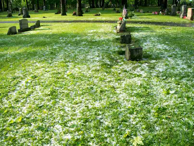The hail had collected on one side of the street in Brookside Park.
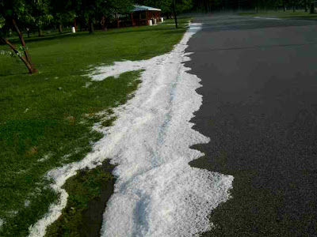And the cold of the hail and the warm humid air combined to create mist over the soccer field in the park.
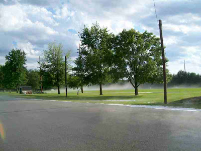I would have enjoyed the hail, but I have a garden, and this is what my garden looked like. The bits of green by the flower pots are sweet potatoes, which are not tolerant of cold. We will see in a few days how they fare.
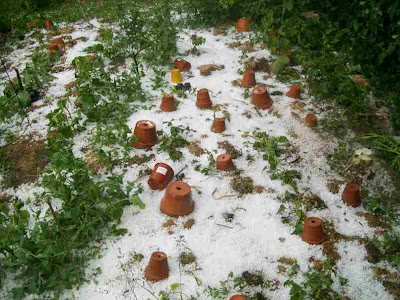My puny little tomato plants took a beating, many of them losing half their leaves. We will see in a few days how serious the damage was to them as well.
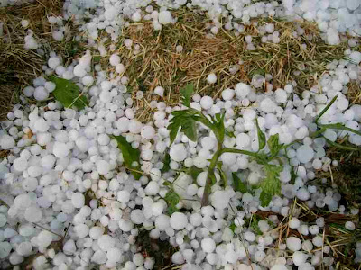Tomorrow is graduation day for the high school. Those with early parties had a bit more excitement than they wanted.
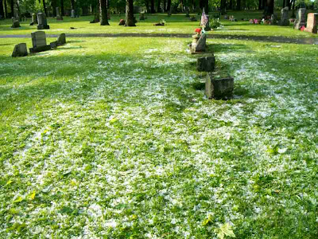The hail had collected on one side of the street in Brookside Park.
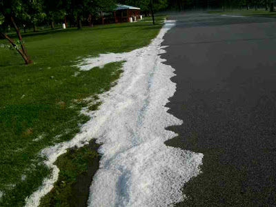And the cold of the hail and the warm humid air combined to create mist over the soccer field in the park.
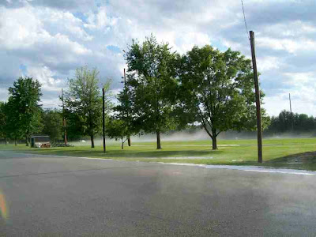I would have enjoyed the hail, but I have a garden, and this is what my garden looked like. The bits of green by the flower pots are sweet potatoes, which are not tolerant of cold. We will see in a few days how they fare.
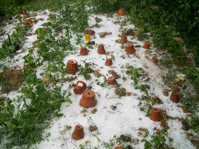My puny little tomato plants took a beating, many of them losing half their leaves. We will see in a few days how serious the damage was to them as well.
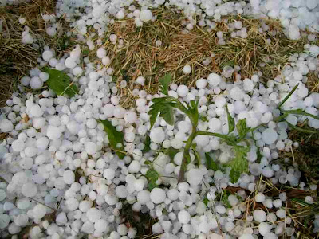Tomorrow is graduation day for the high school. Those with early parties had a bit more excitement than they wanted.
Summer vacation
On Wednesday I heard the happy voices of dozens of children on the way to the park. It could only mean one thing--the end of the school year was near and the students were having a recess day. It is an ancient tradition--I remember park days at the end of the school year when I was in grade school in Minnesota half a century ago. One of the big deals for the St. A's kids is that the older ones are allowed to ride their bikes.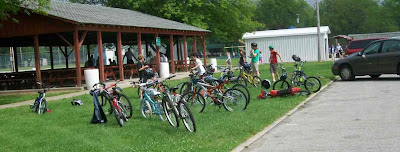In past years students from Demotte and Lafayette have come to Brookside park for their end-of-the-year park day. The Lafayette kids sometimes would come up on Amtrak, be met at the station by their bus, and ride the last bit to the park, and then go home on the bus at the end of the day. That must have been quite an exciting day for them. I vaguely recall that one year the train hit some cattle on the way up and was delayed for several hours. Or was it a vehicle? That may be the reason they are no longer doing it.
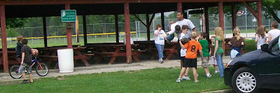The kids are excited to be at the park. You would think that they had never been there before.
Some were on the basketball court, and one of the teachers, Mrs R, told me that they were playing a game called Knock Out. I watched for a while but could not see any sense to what they were doing.
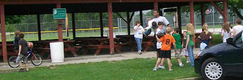The kids are excited to be at the park. You would think that they had never been there before.
Some were on the basketball court, and one of the teachers, Mrs R, told me that they were playing a game called Knock Out. I watched for a while but could not see any sense to what they were doing.
Friday, May 29, 2009
Shopping at Ron's Auctions
In early April I wrote about shopping at Ron's Bargain Shop. Also part of the Ron empire is Ron's Auction House, which is on Vine Street. It is open only for auctions, which are usually held either on Wednesday nights or on Saturdays.
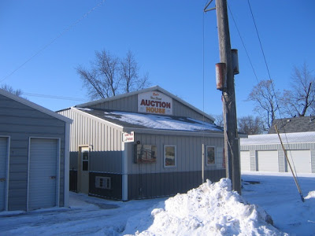Below is what the inside of the building looked like on one Wednesday evening.
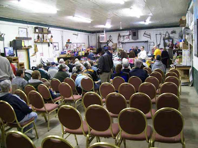At the back of the building is the cashier, where one gets a number and pays when one is done buying. Along the east wall is a small food stand. Rensselaer may not have dinner and a movie, but we do have dinner and an auction.
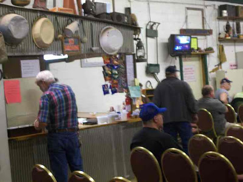There are a bunch of signs that give policies for things like accepting checks. My favorite is the unruly-children policy.
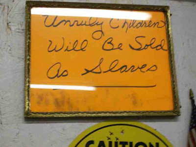Each auction is different, but some things are pretty standard. Housewares are a pretty common item.
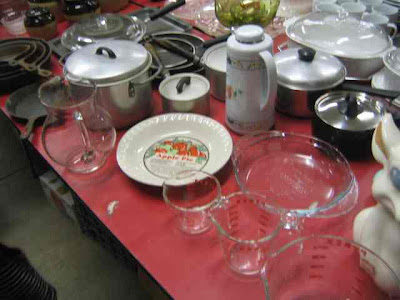I doubt if there are many auctions without some knick-nacks , though you never know what knick-nacks will show up at any particular auction.
When we moved to Rensselaer, there were a lot of auctions at houses. When the owner died or moved, the contents of the house would be auctioned at the house. Now there are very few auctions like that. Instead it seems that the contents of the households are being moved to Ron's Auction House or to auctions at the fairgrounds or the armory. I used to go to a lot of auctions, but that was when we were still adding stuff. Now we need to get rid of stuff.
When I lived in West Virginia for two winters, we did not have television. One of the weekly attractions was the auction at the local auction house. In many ways it was very similar to Ron's auction house. We still have a few items that we bought there.
In addition to knick-nacks, collectibles are popular, and like knick-nacks, there are many different kinds. Below are some old toys. I attended this auction, but did not stay long enough to see them sold.
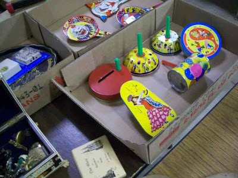The porch furniture below was sold "choice-out." That means all four items were available, but the price was for just one item. The winner could then pick what he or she wanted at that price. The winning bid was $10 and the winner picked the two rockers and the love seat, paying $30. The little table then went back for sale, and it sold for $11. It is not all that unusual for the second round to have a higher price than the first round, though you would expect that the greater choice would be the more valuable.
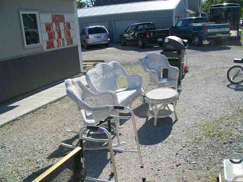Sometimes things are sold by the piece. That means you buy the entire set, but the price is per piece. I guess the advantage of bidding that way is that the price seems lower than it really is. Often items do not get a bid. While I was there, a 35mm Canon camera did not get a bid of even $1. When this happens, the auctioneer lumps something else with it. Eventually something that is actually has value is added to the group of items and the group sells.
Below is the most unusual item I saw at Ron's Auction House in the several visits I have made. I did not stay to see if it sold. It works on the Billy Bass principle. The website, jinglejugs.com, was alive when I took this picture, but it is now down and redirects. That probably means that the only way you are going to get fine merchandise like this is in places like Ron's Auction house or the 2Bobs General Store or one of the other resale shops in Rensselaer. It might be a collectable!
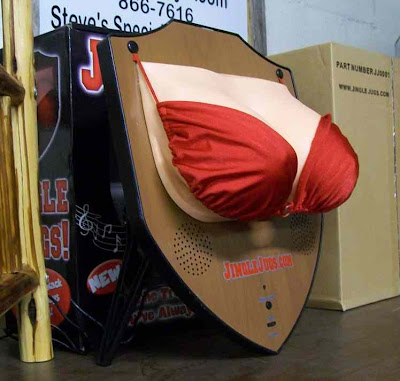You never know what you might find at an auction. To see what is scheduled in upcoming auctions, visit auctionzip.com.
The auctionzip site is a very nice site--I am impressed with its calendar and ability to show you auctions in the vicinity of any zip code. In contrast, I am disappointed in the city of Rensselaer web site at www.cityofrensselaerin.com. At the bottom of the right column is a link for "Public Document Access." It only works if you are using Internet Explorer on a Windows PC. Granted that about 75% of people do use Internet Explorer, but 25% of the people use Firefox, Safari, Opera, or Chrome. If you want to grant public access to documents, you do not restrict access to one browser. I would like to say that only governments do stupid things like this, but corporations who have incompetent web designers sometimes do as well.
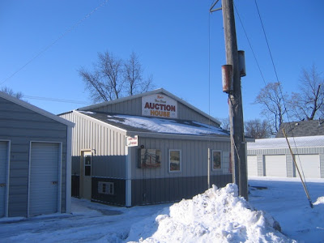Below is what the inside of the building looked like on one Wednesday evening.
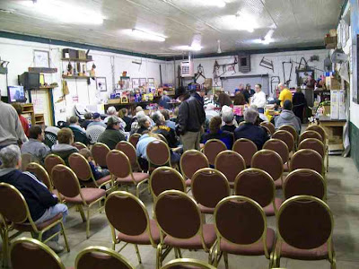At the back of the building is the cashier, where one gets a number and pays when one is done buying. Along the east wall is a small food stand. Rensselaer may not have dinner and a movie, but we do have dinner and an auction.
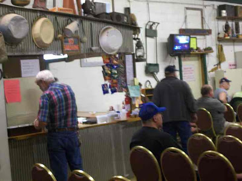There are a bunch of signs that give policies for things like accepting checks. My favorite is the unruly-children policy.
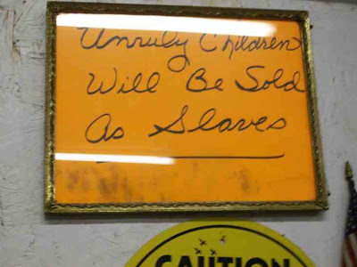Each auction is different, but some things are pretty standard. Housewares are a pretty common item.
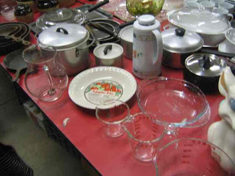I doubt if there are many auctions without some knick-nacks , though you never know what knick-nacks will show up at any particular auction.
When we moved to Rensselaer, there were a lot of auctions at houses. When the owner died or moved, the contents of the house would be auctioned at the house. Now there are very few auctions like that. Instead it seems that the contents of the households are being moved to Ron's Auction House or to auctions at the fairgrounds or the armory. I used to go to a lot of auctions, but that was when we were still adding stuff. Now we need to get rid of stuff.
When I lived in West Virginia for two winters, we did not have television. One of the weekly attractions was the auction at the local auction house. In many ways it was very similar to Ron's auction house. We still have a few items that we bought there.
In addition to knick-nacks, collectibles are popular, and like knick-nacks, there are many different kinds. Below are some old toys. I attended this auction, but did not stay long enough to see them sold.
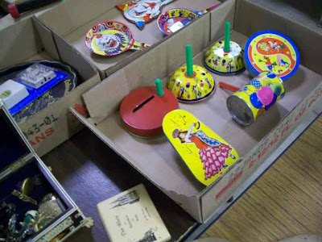The porch furniture below was sold "choice-out." That means all four items were available, but the price was for just one item. The winner could then pick what he or she wanted at that price. The winning bid was $10 and the winner picked the two rockers and the love seat, paying $30. The little table then went back for sale, and it sold for $11. It is not all that unusual for the second round to have a higher price than the first round, though you would expect that the greater choice would be the more valuable.
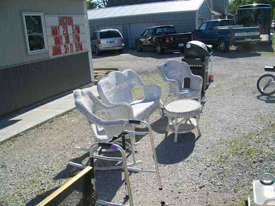Sometimes things are sold by the piece. That means you buy the entire set, but the price is per piece. I guess the advantage of bidding that way is that the price seems lower than it really is. Often items do not get a bid. While I was there, a 35mm Canon camera did not get a bid of even $1. When this happens, the auctioneer lumps something else with it. Eventually something that is actually has value is added to the group of items and the group sells.
Below is the most unusual item I saw at Ron's Auction House in the several visits I have made. I did not stay to see if it sold. It works on the Billy Bass principle. The website, jinglejugs.com, was alive when I took this picture, but it is now down and redirects. That probably means that the only way you are going to get fine merchandise like this is in places like Ron's Auction house or the 2Bobs General Store or one of the other resale shops in Rensselaer. It might be a collectable!
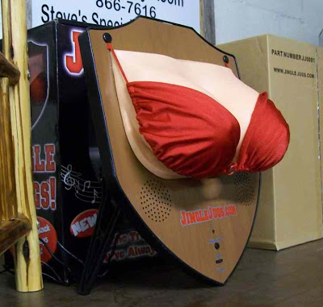You never know what you might find at an auction. To see what is scheduled in upcoming auctions, visit auctionzip.com.
The auctionzip site is a very nice site--I am impressed with its calendar and ability to show you auctions in the vicinity of any zip code. In contrast, I am disappointed in the city of Rensselaer web site at www.cityofrensselaerin.com. At the bottom of the right column is a link for "Public Document Access." It only works if you are using Internet Explorer on a Windows PC. Granted that about 75% of people do use Internet Explorer, but 25% of the people use Firefox, Safari, Opera, or Chrome. If you want to grant public access to documents, you do not restrict access to one browser. I would like to say that only governments do stupid things like this, but corporations who have incompetent web designers sometimes do as well.
Thursday, May 28, 2009
Will Barbie graduate?
The displays in the historical society window and the library display case have changed fairly recently. The Historical Society is featuring a display of graduation things. Some are quite old, other not so old.
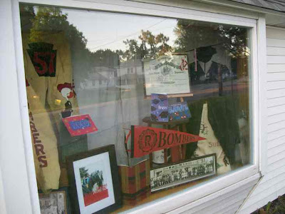The library uses both of its display cases for a large display of Barbie and ken.
Barbie is seen in many roles. The one I did not notice was Barbie graduating, which would be seasonal.
But I guess little girls do not dream of graduating from high school in the same way that they dream of other things.
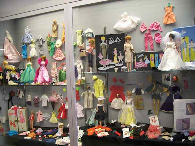
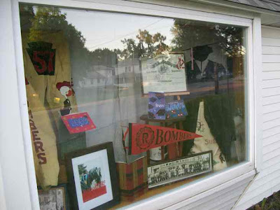The library uses both of its display cases for a large display of Barbie and ken.
Barbie is seen in many roles. The one I did not notice was Barbie graduating, which would be seasonal.
But I guess little girls do not dream of graduating from high school in the same way that they dream of other things.
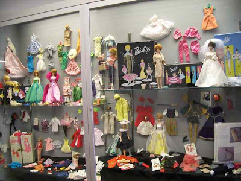
Wednesday, May 27, 2009
Tin roof
As the weather has gotten nicer, I have seen more people re-roofing their houses. I have also noticed a number of houses in Rensselaer that have abandoned shingles and gone to metal roofs. Below is a picture of two houses with metal roofs, and there is another done the block from them.
Metal roofs do not have to be drab--they can be quite colorful, as this red roof shows.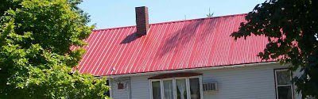Below is another red roof, but considerably bigger.
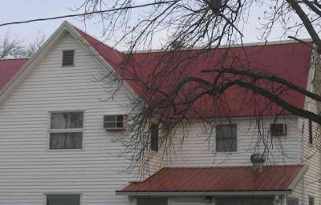There are two or three green roofs that I have noticed.
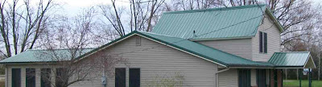Most of the houses with metal roofs are newer, but below is an older house with a steeply-pitched roof that is metal.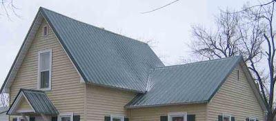The primary reason I notice metal roofs is that several years ago the roof on my ancient shed began to leak again. It has a fairly flat roof, and I was told the first time that I put a roof on it that I should not use shingles but rather roll roofing. But even that did not last, so I decided to try a metal roof.
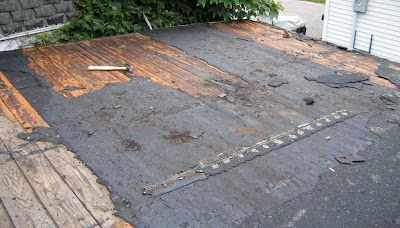This is about as big a roofing project as I am willint to attempt. The roof was not too high and it was flat, so my acrophobia did not kick in. And there was no need to cut the roofing into careful shapes.
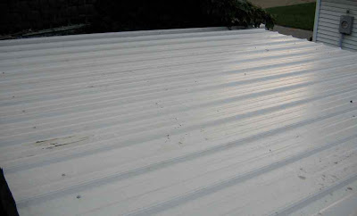Last time I checked, metal roofs cost considerably more than shingle roofs, but they are supposed to last a lot longer. They seem to be pretty standard on commercial buildings.
And speaking of roofs, SJC has been getting a new roof on the new addition to the field house.
The original roof was not installed properly, and there was leakage in the seam where the old roof met the new roof. The leakage damaged the insulation, so the solution was to take up the existing roof and do it again.
Metal roofs do not have to be drab--they can be quite colorful, as this red roof shows.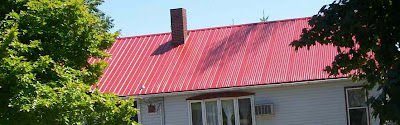Below is another red roof, but considerably bigger.
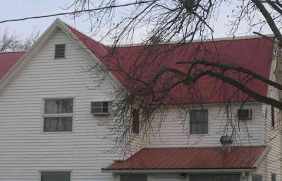There are two or three green roofs that I have noticed.
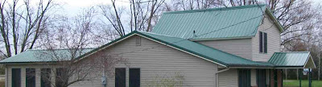Most of the houses with metal roofs are newer, but below is an older house with a steeply-pitched roof that is metal.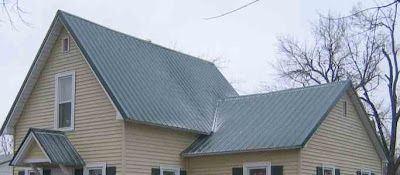The primary reason I notice metal roofs is that several years ago the roof on my ancient shed began to leak again. It has a fairly flat roof, and I was told the first time that I put a roof on it that I should not use shingles but rather roll roofing. But even that did not last, so I decided to try a metal roof.
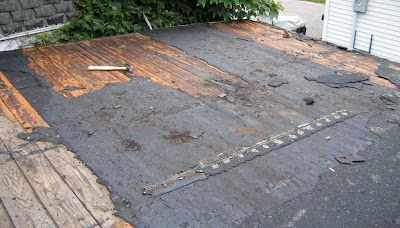This is about as big a roofing project as I am willint to attempt. The roof was not too high and it was flat, so my acrophobia did not kick in. And there was no need to cut the roofing into careful shapes.
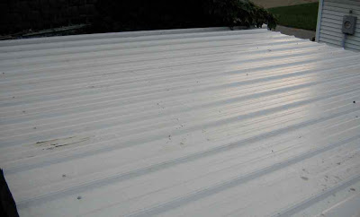Last time I checked, metal roofs cost considerably more than shingle roofs, but they are supposed to last a lot longer. They seem to be pretty standard on commercial buildings.
And speaking of roofs, SJC has been getting a new roof on the new addition to the field house.
The original roof was not installed properly, and there was leakage in the seam where the old roof met the new roof. The leakage damaged the insulation, so the solution was to take up the existing roof and do it again.
Tuesday, May 26, 2009
Memorial Day 2009
Black locust flowers
Blooming last week and this week is the black locust. I probably should have done this one before the tulip tree, since it seems to hit full flower a bit before the tulip tree. (Remember to look up at the tulip trees this week. They are blooming. If those flowers were bright red, they would be spectacular.) Though the individual flowers are samll, they come in bunches so they are quite noticeable.
This is the best time of the year to spot them, but I have not seen a lot, so they must not be widely planted. We seem to be a bit north of their native range. The one below is near Vine Street and Elza.
The more common locust tree seems to be the honey locust which has very unimpressive flowers that are almost ready to bloom.
I found the small tree or bush below out in the country. It looks like cherry, but I am not sure what kind. Could it be pin or fire cherry?
And for this week's obscure tree flower, here is a white pine. Do you think it is as attractive as the red pine?
In non-flowering news, the cottonwood trees have started shedding their seeds.
This is the best time of the year to spot them, but I have not seen a lot, so they must not be widely planted. We seem to be a bit north of their native range. The one below is near Vine Street and Elza.
The more common locust tree seems to be the honey locust which has very unimpressive flowers that are almost ready to bloom.
I found the small tree or bush below out in the country. It looks like cherry, but I am not sure what kind. Could it be pin or fire cherry?
And for this week's obscure tree flower, here is a white pine. Do you think it is as attractive as the red pine?
In non-flowering news, the cottonwood trees have started shedding their seeds.
Monday, May 25, 2009
Planting
With the wet spring the area farmers have been slow to get the fields planted. I have not been out in the country much in the last month, but last week I was out at the right place at the right time to see some tractors in the fields.
Help me out, you farm experts. Is he disking?
The picture below is a bit blurry because the tractor was raising a lot of dust. It looks like he was planting.
I even saw some farm activity going on at the airport. A crop duster landed and reloaded with chemicals.
Several days earlier I noticed a truck parked by a field that had all the supplies needed for planting. I am not sure what the chemicals are in the two tanks, but when you do the no-till farming, you substitute chemicals for plowing.
Also on the truck were two varieties of seed corn, one shown below.
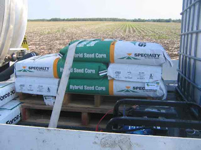And more chemicals.
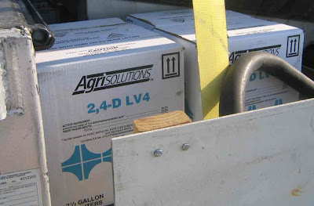The point of all this is to get the field looking like the picture below, which shows that some farmers got their planting done a few weeks ago.
It takes a lot of work to get the crops planted. I struggle with a tiny garden--I cannot imagine doing hundreds of acres.
Help me out, you farm experts. Is he disking?
The picture below is a bit blurry because the tractor was raising a lot of dust. It looks like he was planting.
I even saw some farm activity going on at the airport. A crop duster landed and reloaded with chemicals.
Several days earlier I noticed a truck parked by a field that had all the supplies needed for planting. I am not sure what the chemicals are in the two tanks, but when you do the no-till farming, you substitute chemicals for plowing.
Also on the truck were two varieties of seed corn, one shown below.
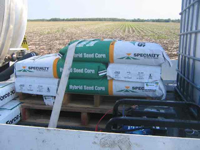And more chemicals.
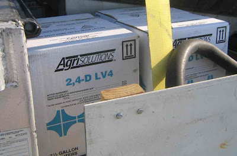The point of all this is to get the field looking like the picture below, which shows that some farmers got their planting done a few weeks ago.
It takes a lot of work to get the crops planted. I struggle with a tiny garden--I cannot imagine doing hundreds of acres.
Sunday, May 24, 2009
The 14 stations of the flags
Instead of going to church this Sunday's post, let us go to Weston cemetery, which is decorated for Memorial Day. For the past few days there have been many people placing flowers on the graves of loved ones, making it very colorful.
In addition, there are hundred of American flags throughout the cemetery, some with signs. There are fourteen of these signs or stations for you to read and contemplate as you make your way through the cemetery. At the eastern entrance are stations 1 and 2.
1) 13 Flags representing 13 original colonies
2) 19 flags representing Indiana as the 19th state
Following the road and taking the right fork, we get more stations.
3) Six rows of flags--six flags in the first row; two flags in the second row', three flags in the third row, zero flags in the fourth row, two flags in the fifth row, six flags in the last row indicating the number of veterans killed in the civil War 623026
4) Three rows of flags--seven flags in the first row, zero flags in the second row, four flags in the third row representing the number 704, the number of known veterans buried in the Weston Cemetery.
5) One (1) flag representing the missing in action (M.I.A'S)
Crossing the bridge and going south we find two more.
6) South side of Freedom Tree: Four (4) rows of flags in sequence of 4-2-9-6 representing the number of known military deaths in Iraq (4,296)
7) North side of Freedom Tree: Three (3) rows of flags in sequence of 6-8-6 representing the number of known military deaths in Afghanistan
8) Six rows of flags representing the number 116,708 the number of veterans killed in World War I
9) Six rows of flags representing the number 407,316 the number of veterans killed in World War II
10) Five rows of flags representing the number 36,914 the number of veterans killed in the Korean War
11) Five rows of flags representing the number 58,169 the number of veterans killed in the Vietnam war
12) Fifty (50) flags representing the 50 states.
13) Sequence of three (3) flags in a rows representing the number 1-5-4 the number of veterans killed in Iraq/Afghanistan from Indiana
14) Fifty (50) crosses with 50 flags in honor of a grateful nation and its time honored heros.
Our civic religion and our denominational religions are intertwined on Memorial Day. You can witness it on Monday at 11:00 a.m. when there will be a memorial service in Weston Cemetery.
In addition, there are hundred of American flags throughout the cemetery, some with signs. There are fourteen of these signs or stations for you to read and contemplate as you make your way through the cemetery. At the eastern entrance are stations 1 and 2.
1) 13 Flags representing 13 original colonies
2) 19 flags representing Indiana as the 19th state
Following the road and taking the right fork, we get more stations.
3) Six rows of flags--six flags in the first row; two flags in the second row', three flags in the third row, zero flags in the fourth row, two flags in the fifth row, six flags in the last row indicating the number of veterans killed in the civil War 623026
4) Three rows of flags--seven flags in the first row, zero flags in the second row, four flags in the third row representing the number 704, the number of known veterans buried in the Weston Cemetery.
5) One (1) flag representing the missing in action (M.I.A'S)
Crossing the bridge and going south we find two more.
6) South side of Freedom Tree: Four (4) rows of flags in sequence of 4-2-9-6 representing the number of known military deaths in Iraq (4,296)
7) North side of Freedom Tree: Three (3) rows of flags in sequence of 6-8-6 representing the number of known military deaths in Afghanistan
8) Six rows of flags representing the number 116,708 the number of veterans killed in World War I
9) Six rows of flags representing the number 407,316 the number of veterans killed in World War II
10) Five rows of flags representing the number 36,914 the number of veterans killed in the Korean War
11) Five rows of flags representing the number 58,169 the number of veterans killed in the Vietnam war
12) Fifty (50) flags representing the 50 states.
13) Sequence of three (3) flags in a rows representing the number 1-5-4 the number of veterans killed in Iraq/Afghanistan from Indiana
14) Fifty (50) crosses with 50 flags in honor of a grateful nation and its time honored heros.
Our civic religion and our denominational religions are intertwined on Memorial Day. You can witness it on Monday at 11:00 a.m. when there will be a memorial service in Weston Cemetery.
Saturday, May 23, 2009
The consultants' report
Did you get a chance to look at the planning report that was produced for the Park Board? Today I went to the library and skimmed through its 100+ pages. It begins with background and continues with a summary, full of charts, of the surveys that the consultants asked people to fill out. Then there was an analysis of each of the parks, which is where I thought it started getting interesting. Finally pages 97-99 had a summary of recommendations. If you do not have much time and want to know the gist of the report, start there.
Here are some highlights, sometimes with my comments. The park board wants to continue to pursue the purchase of more land, but it has no money budgeted to buy any. The consultants recognize that the east side of town in under-parked, with only Columbia Park. (However, this is ameliorated by the presence of the school corporations lands around the high school and Van Rensselaer. I did not see any suggestion that the park board and the school corporation cooperate more.)
A high priority is the development a trail system master plan. It sounds good in theory, but I do not see how a good trail system would fit in Rensselaer. Maybe they should think outside the city limits. The report suggests more horseshoe pits--do people still actually play horseshoes? I can see the reasoning for wanting dog parks within the existing parks--right now a lot of people exercise their dogs in the parks, and even though most are responsible in cleaning up after their dogs, maybe some are not. I liked the idea of adding some nature plantings in Brookside and Iroquois to reduce the need for mowing and maintenance. (Saint Joseph's College could save a lot of money with that idea--too bad they will never do it.) There was a lot about ADA compliancy.
The plan suggested improving the ball field in Iroquois. The ball field, though, is in a poor location, with a busy street on one side and fenced city buildings on the other. The proposal to add benches to Memorial Park seems sound, (maybe they could get some from St. Joe's, which is littered with benches) as does the proposal to contain the parking area of Laird's Landing. (Now pretty much the entire park is a parking lot.)
There was a lot more there, and some of the recommendations that did not interest me, may interest you. If you have a chance, take a look at the report. (It is too bad that they did not put a version on-line.)
Feel free to comment.
Here are some highlights, sometimes with my comments. The park board wants to continue to pursue the purchase of more land, but it has no money budgeted to buy any. The consultants recognize that the east side of town in under-parked, with only Columbia Park. (However, this is ameliorated by the presence of the school corporations lands around the high school and Van Rensselaer. I did not see any suggestion that the park board and the school corporation cooperate more.)
A high priority is the development a trail system master plan. It sounds good in theory, but I do not see how a good trail system would fit in Rensselaer. Maybe they should think outside the city limits. The report suggests more horseshoe pits--do people still actually play horseshoes? I can see the reasoning for wanting dog parks within the existing parks--right now a lot of people exercise their dogs in the parks, and even though most are responsible in cleaning up after their dogs, maybe some are not. I liked the idea of adding some nature plantings in Brookside and Iroquois to reduce the need for mowing and maintenance. (Saint Joseph's College could save a lot of money with that idea--too bad they will never do it.) There was a lot about ADA compliancy.
The plan suggested improving the ball field in Iroquois. The ball field, though, is in a poor location, with a busy street on one side and fenced city buildings on the other. The proposal to add benches to Memorial Park seems sound, (maybe they could get some from St. Joe's, which is littered with benches) as does the proposal to contain the parking area of Laird's Landing. (Now pretty much the entire park is a parking lot.)
There was a lot more there, and some of the recommendations that did not interest me, may interest you. If you have a chance, take a look at the report. (It is too bad that they did not put a version on-line.)
Feel free to comment.
Facelift
In early April I noticed workmen busy on a building located on McKinley Street, aka U.S. Highway 231. They were putting wooden strips on a building that I believed once housed Culligan.
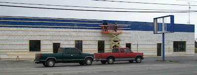The main occupant of this building is Jazzercise, an exercise club or studio.
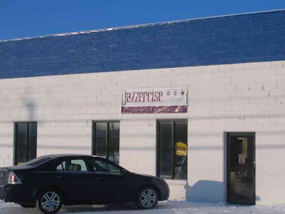About a week later the entire building had been "stripped."
Two weeks later the front had a new look.
On the first of May it looked mostly complete, and there were expensive lawnmowers in front.
On May 21face lift looked completed and successful. The Jazzercise sign is back in place, and the business renting the lawnmowers is called "Big Dog Rental and Sales."
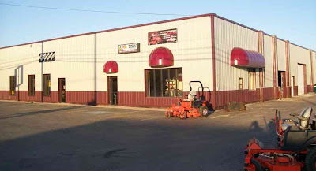A bit further south on McKinley another building is having a face lift, the building of the Prairie's Edge. You can see what it used to look like here. A month ago the building had its old blue awnings removed (which were a lot like the new red awnings in the picture above) and looked like a work in progress.
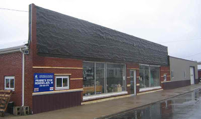About two weeks later the beginnings of a canopy were visible.
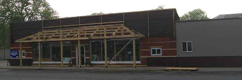On May 21, the canopy looked mostly done and siding was being added to the building.
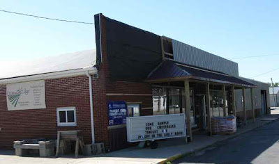Another change that can be considered a face lift is the sodding of the yards disrupted by the Melville Street Construction project. The picture below was taken last week.
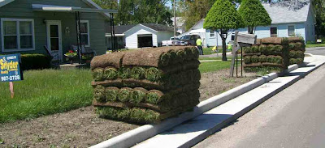
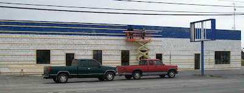The main occupant of this building is Jazzercise, an exercise club or studio.
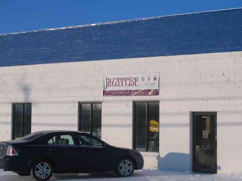About a week later the entire building had been "stripped."
Two weeks later the front had a new look.
On the first of May it looked mostly complete, and there were expensive lawnmowers in front.
On May 21face lift looked completed and successful. The Jazzercise sign is back in place, and the business renting the lawnmowers is called "Big Dog Rental and Sales."
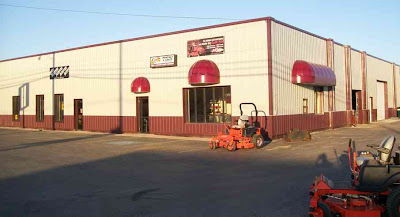A bit further south on McKinley another building is having a face lift, the building of the Prairie's Edge. You can see what it used to look like here. A month ago the building had its old blue awnings removed (which were a lot like the new red awnings in the picture above) and looked like a work in progress.
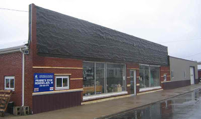About two weeks later the beginnings of a canopy were visible.
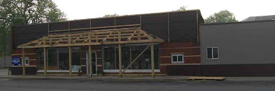On May 21, the canopy looked mostly done and siding was being added to the building.
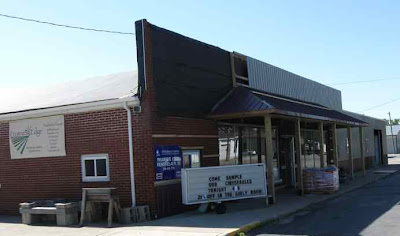Another change that can be considered a face lift is the sodding of the yards disrupted by the Melville Street Construction project. The picture below was taken last week.
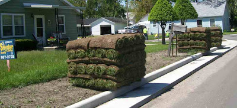
Subscribe to:
Posts (Atom)